Eye of the Sea
Thief 2 Fan Mission
Wide Linear, Stealth, Exploration
4 Month Solo Project
Released January 28, 2025
Eye of the Sea is a fully complete, ~1 hour long level for Thief 2 (2000) that encourages careful stealth and creative navigation. Players fill the role of a thief sent by the mysterious Keepers to find a lost relic in a temple hidden beneath a noble's vacation island home. To the player's surprise, a band of pirates arrived before them and are actively raiding the island, and the player must prove themselve's the better thief.
Download here (Requires a NewDark-patched copy of Thief 2. Find more info here.).
See player reaction and discussion here. Player opinion was very positive, with many players appreciating the secret-filled level design, subtle storytelling, and level scripting.

 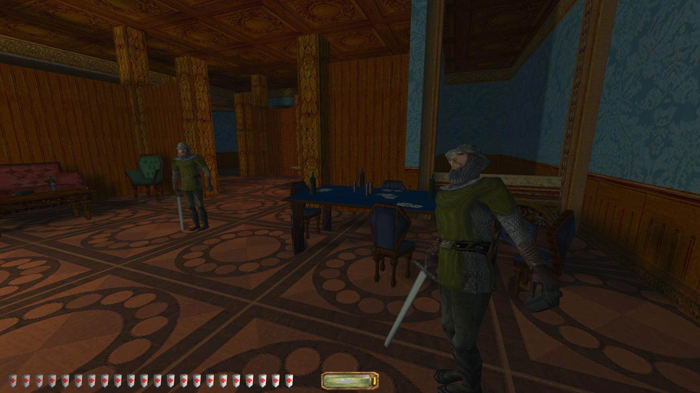
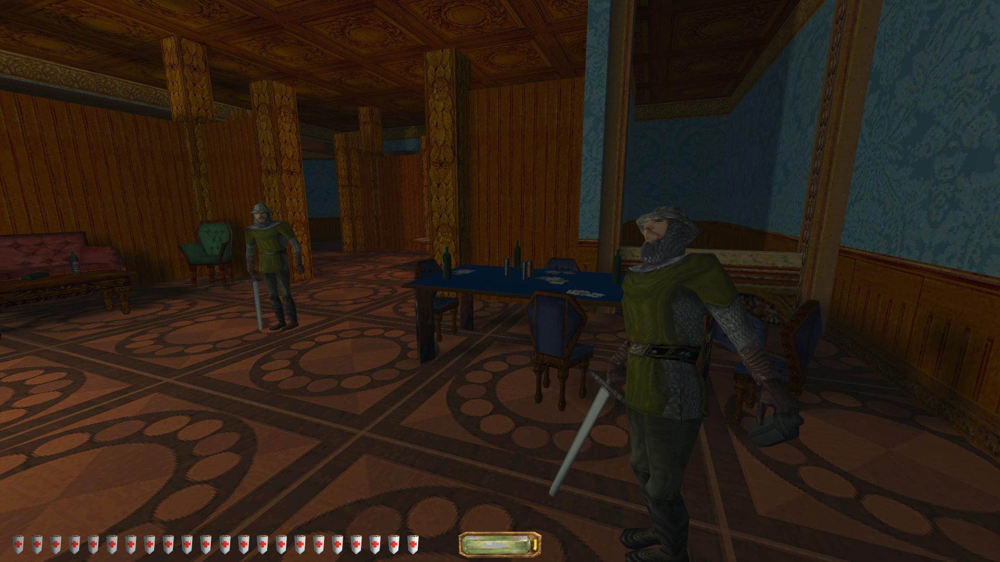
 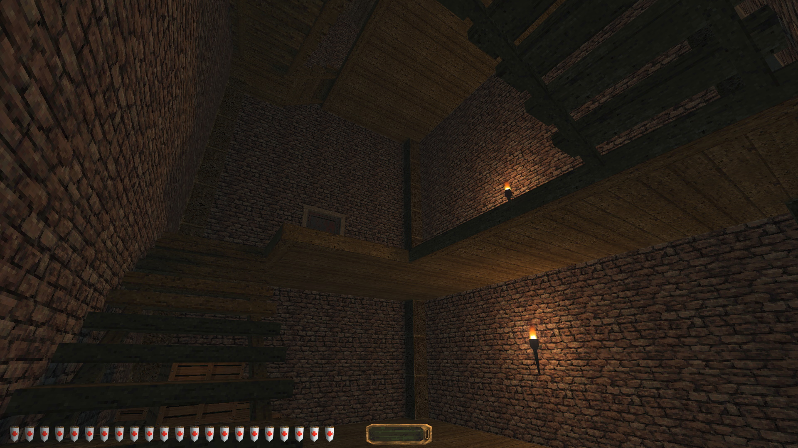
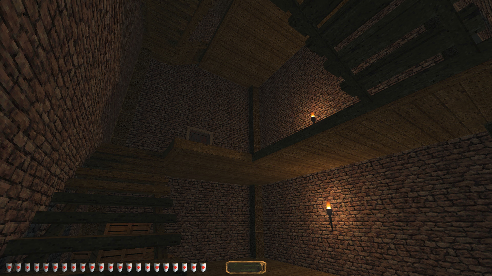


 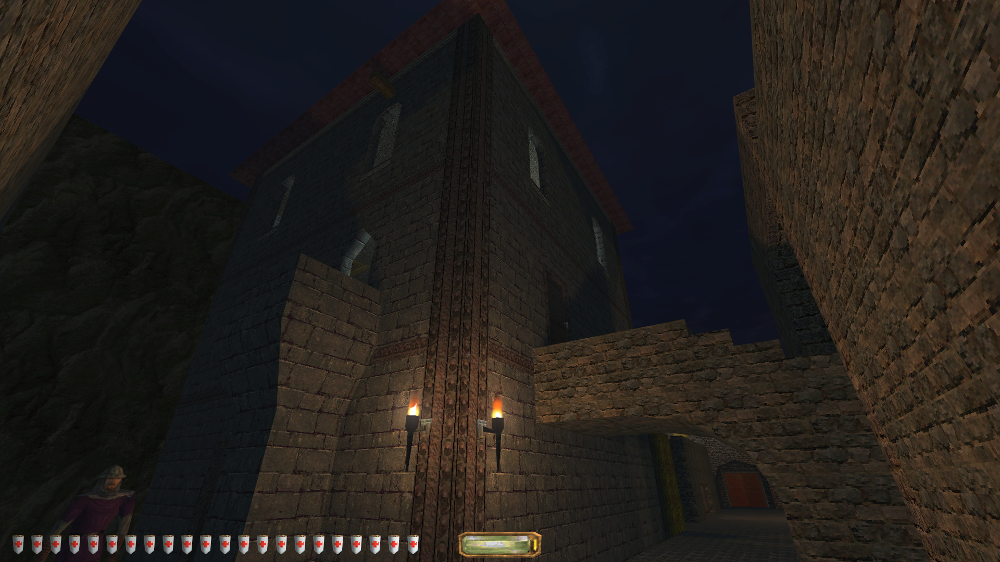
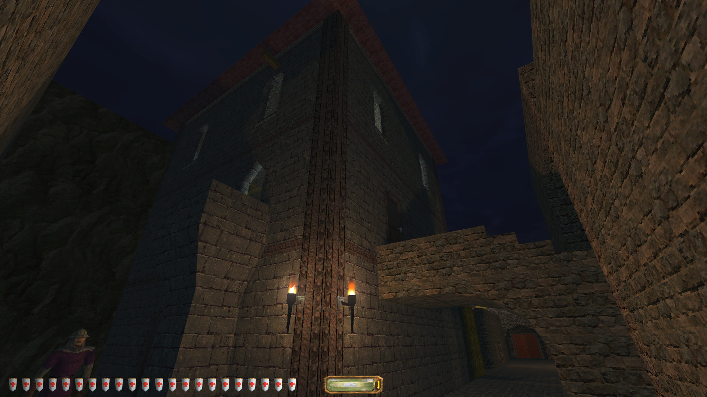
 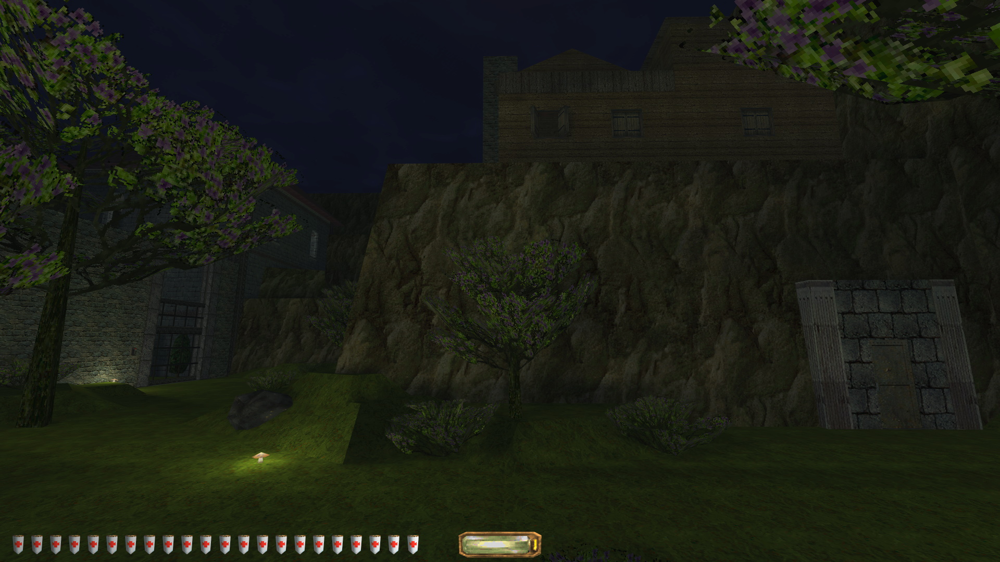
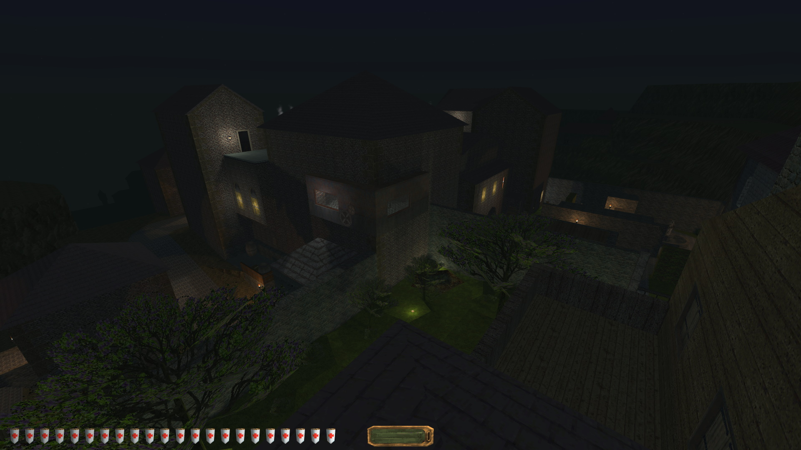
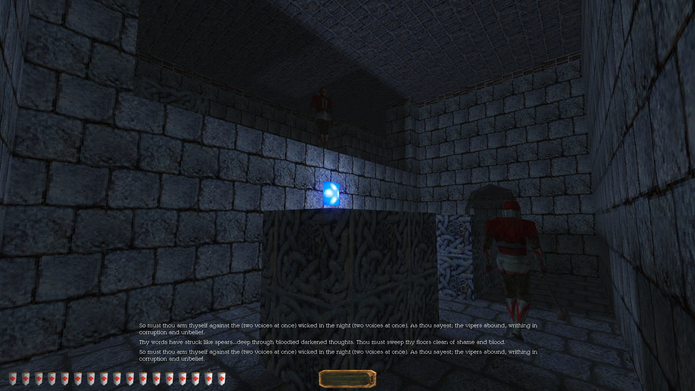
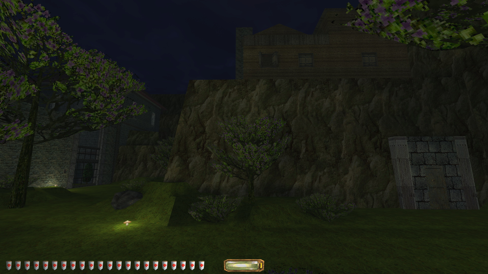
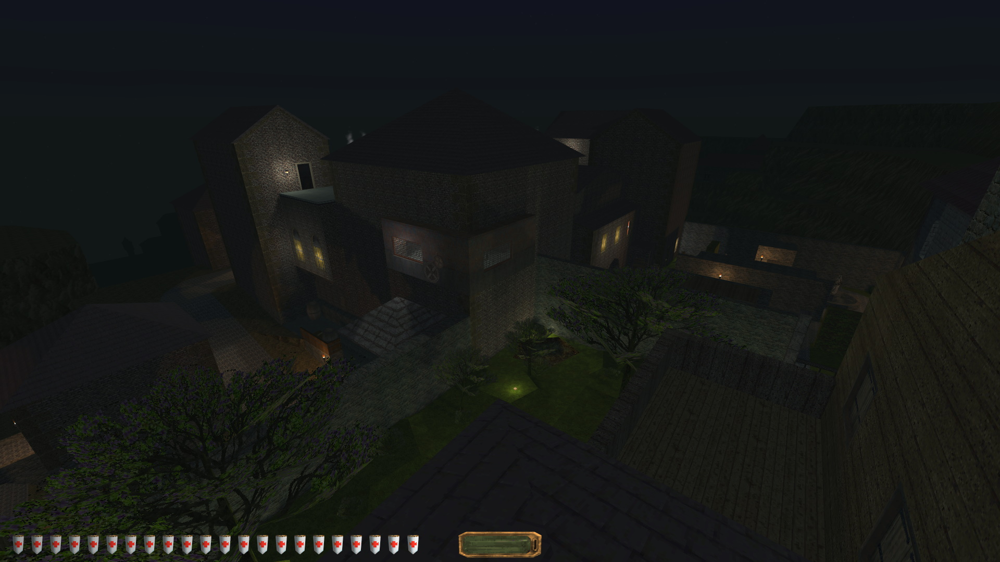
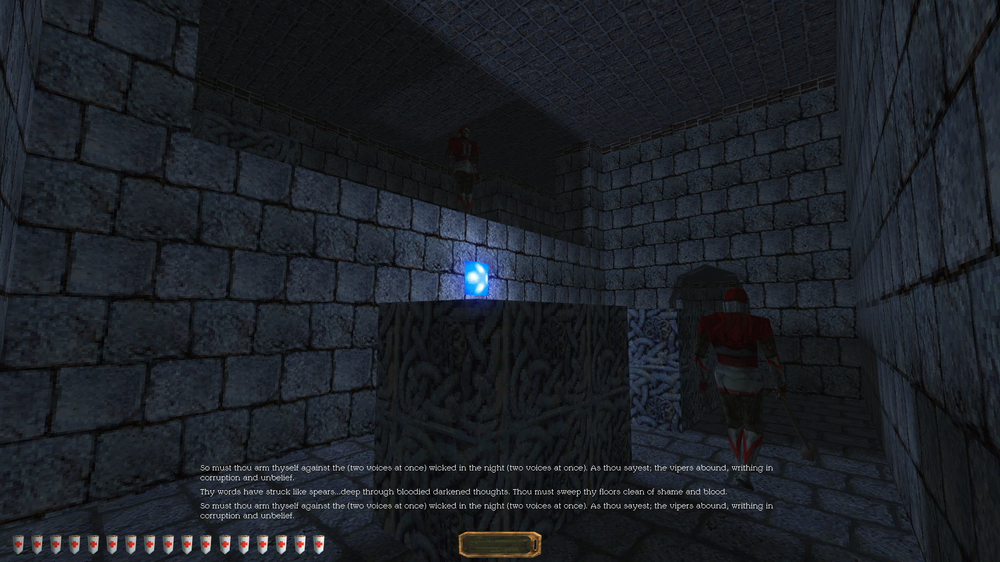
 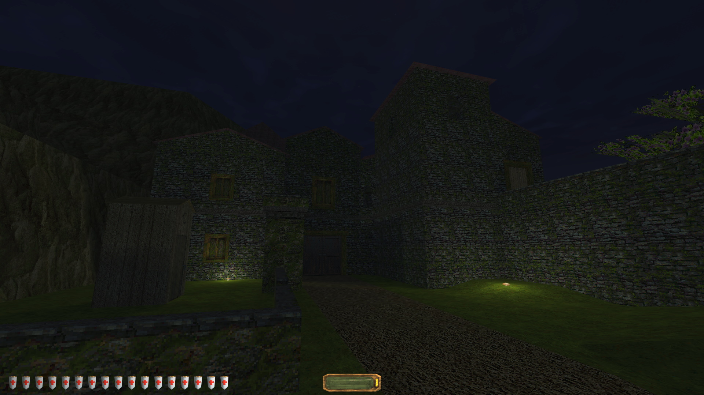
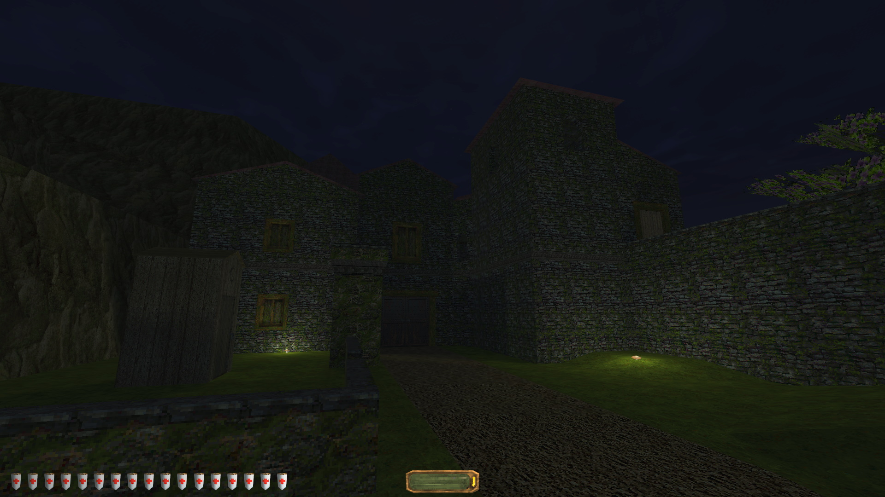


Design and Process
Inspired by the wide-linear mission design of Arkane games that allow players to tackle set tasks in their own way, and the layered, exploratory, and shortcut-full design of FromSoftware games like Dark Souls, I set out to create a full Thief 2 level, from conception to release.
Layout Design
Before I jumped into the editor I planned the level via text, focusing on objectives and narrative. I then entered a cycle of sketching up layouts and implementing them with gameplay for the three distinct zones one at a time.
Check out a PDF of my paper plans/notes here.
The player begins in the open ended and relatively easy village where they can optionally explore the homes and pirates' ship.
Once they find one of several ways into the house, the space becomes tighter, more complex, and heavily patrolled by pirates. The way to the temple is locked and the player can either go to where the key is stated to be or find one of two less obvious routes into the temple.
The temple is tighter and more linear, acting as a challenging choke point for stealth. Once the player obtains the Eye, a new form of enemy, ghosts, appear and the player must backtrack through a more hostile version of familiar territory.
The level offers players a number of subversive routes that help the player navigate the space undetected. They include, but aren't limited to, secret doors behind bookshelves and paintings, hidden gaps in walls, attics, and open windows. These reinforce the stealth fantasy and are a compelling reward for exploration.
The level is strongly imageable, utilizing asymmetry and distinct zones to help players build a strong memory of the complex space. To ensure imageability, all but the last round of playtesting was done without any in-game map for reference.
Gameplay Design
Implemented as parts of the layout were completed, gameplay involved stealth interactions with enemy NPCs, using opportunistic navigation tools, puzzle solving, treasure collecting, and special objectives.
The difficulty of each area varied depending on the place in relation to objectives, which was integrated contextually into the worldbuilding.
Players must both break into a vault in the mansion that requires a key from the back garden and find a doll in the abandoned house past the mansion. These objectives lead the player to all four major areas of the level.
Optional objectives include gathering resources in the mansion basement to craft a key to a safe, collecting two hints to crack a code lock located out front of the mansion, and gathering various bits of loot around the whole level.
Narrative and Hooks
The player is a thief hired by the Keeper order to obtain an artifact called the Eye of the Sea from an island temple. Lord Gideon, a navyman who conqueored the island years before but failed to find the Eye, has built his vacation home around the temple. When the player arrives, they are meant to meet with an agent in the village below, but find the island being actively raided by a crew of pirates.
Through readables and environmental storytelling, the player is able to piece together the rest of the story, which involves a dark sea god's eye having been stolen by the islanders' ancestors and a corrupted crew of the expeditionary navy (the afformentioned pirates) having been cursed to return the Eye to its owner.
The narrative features hooks that explore the fantasy of being a master thief:
- 1. The player gets to connect with Thief's underworld by sneaking into the village and searching for their contact.
- 2. The player is a better thief than the pirates. They resort to stealth, require less assistance, and they may not even need to use violence to obtain the Eye. There is also a puzzle in the temple that the pirates are unable to solve, while the player is.
- 3. The player is an uninformed pawn in a larger conflict and gets to overcome this by putting together the clues of the story themselves.
Playtesting
Throughout the course of this project, I had twelve different testers. Testers included other level designers, long-time Thief fans, and a few people newer to Thief.
Having testers with varying experience gave me access to a wider variety of feedback. Testers were introduced at different stages of development to ensure I regularly had players going in blind. I observed every gameplay test and took detailed notes.
The difficulty of the level was ultimately crafted around the long-time Thief fans, as in a modding scene like this, they best represented my practical playerbase upon release. Several were vital to the final rounds of QA testing as they were well qualified to find exploits and bugs.